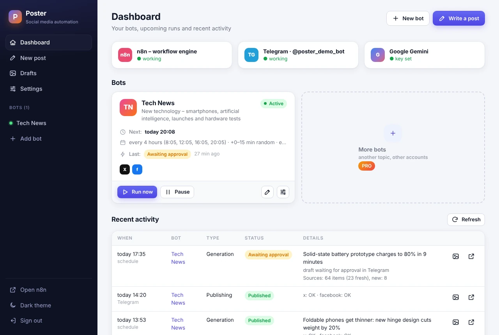
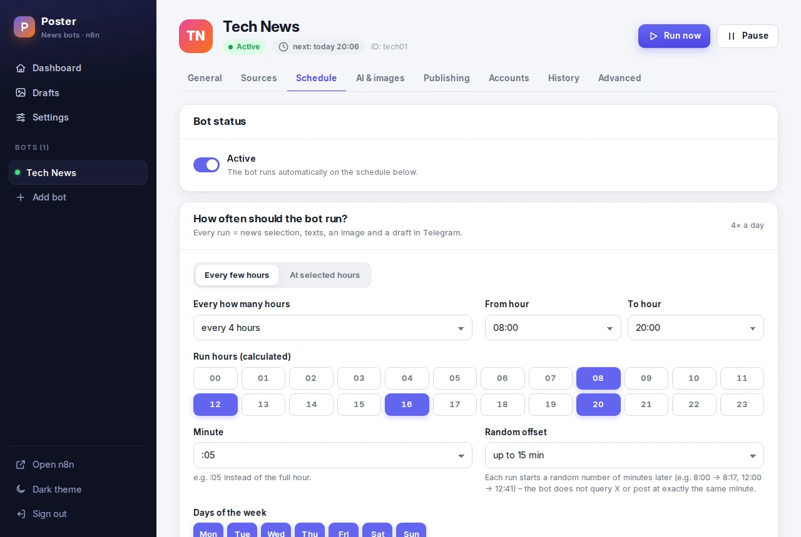
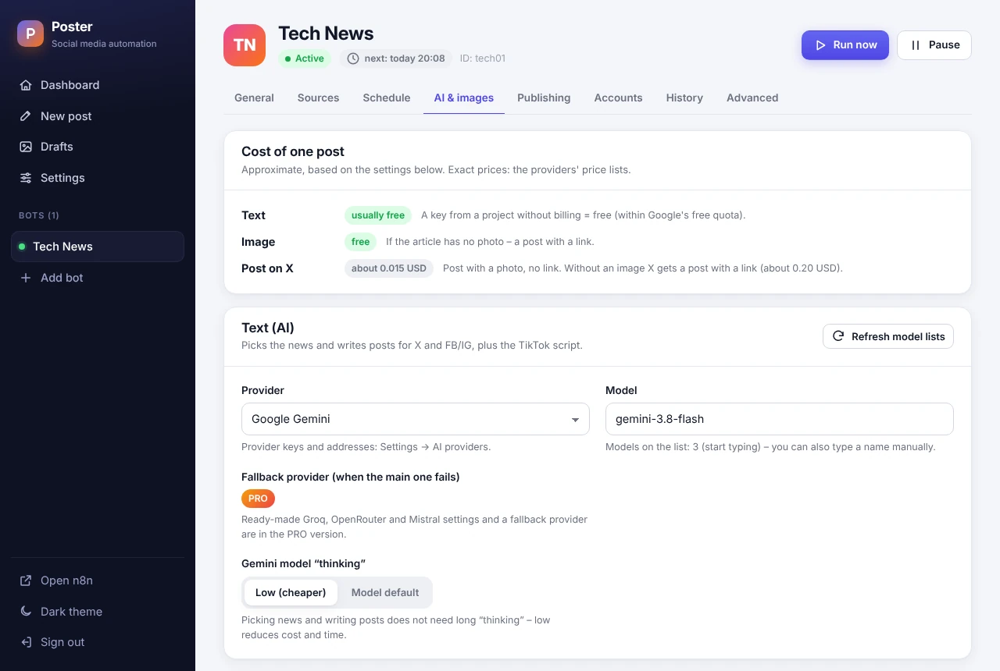
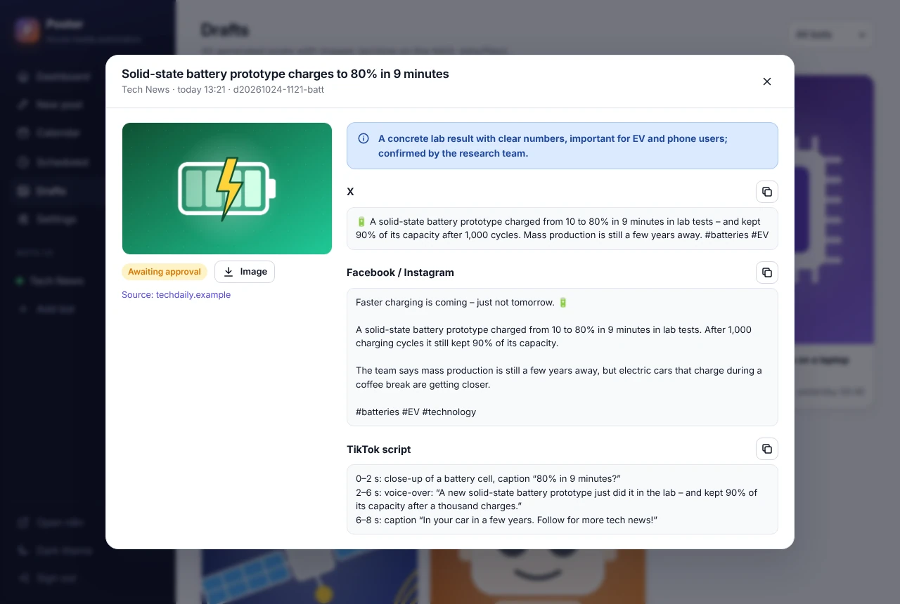
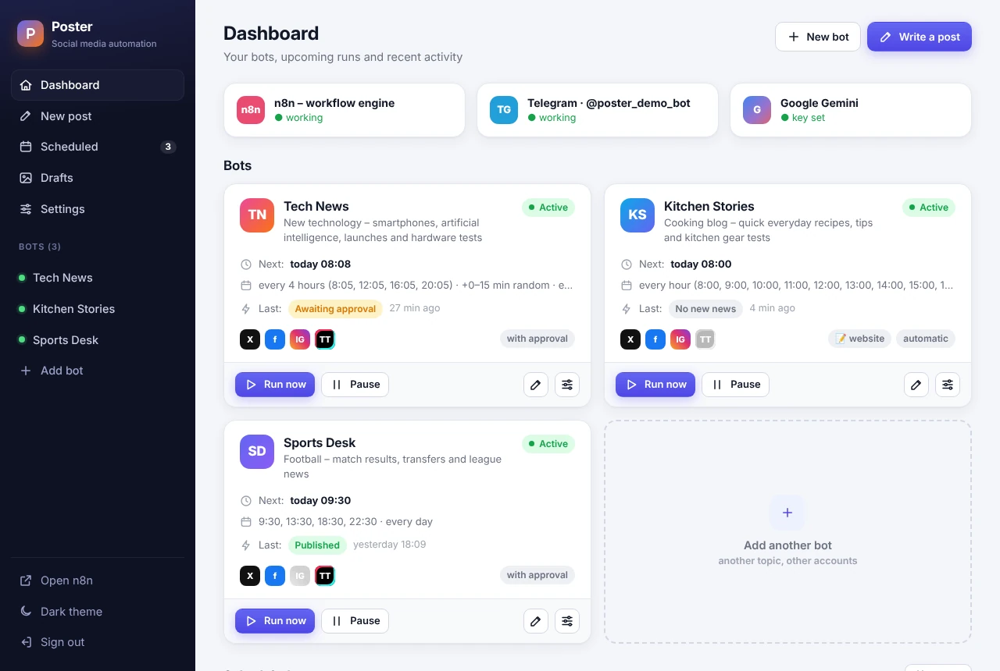
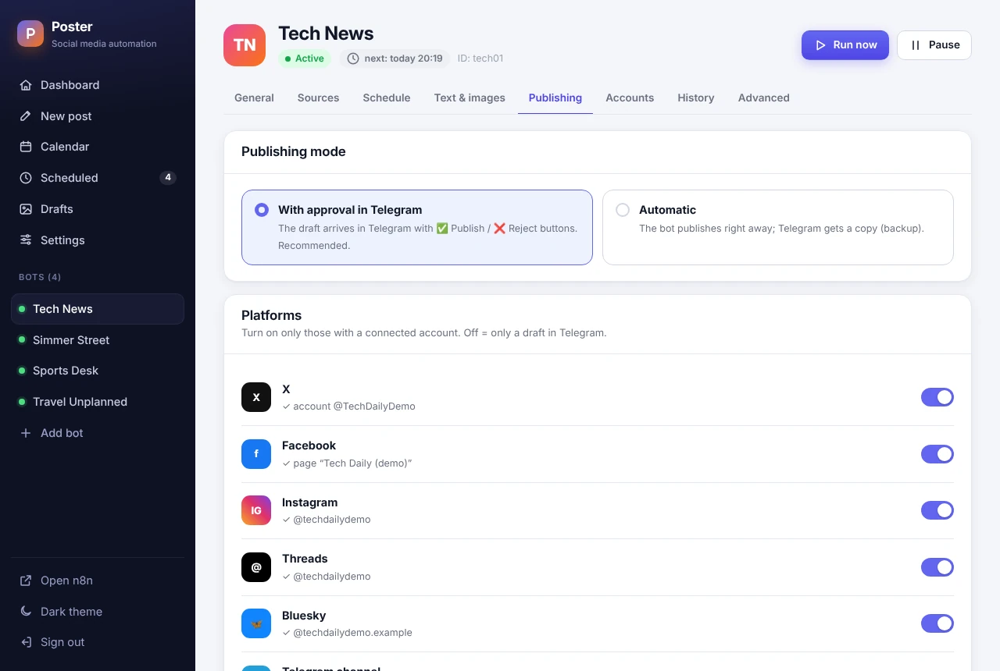
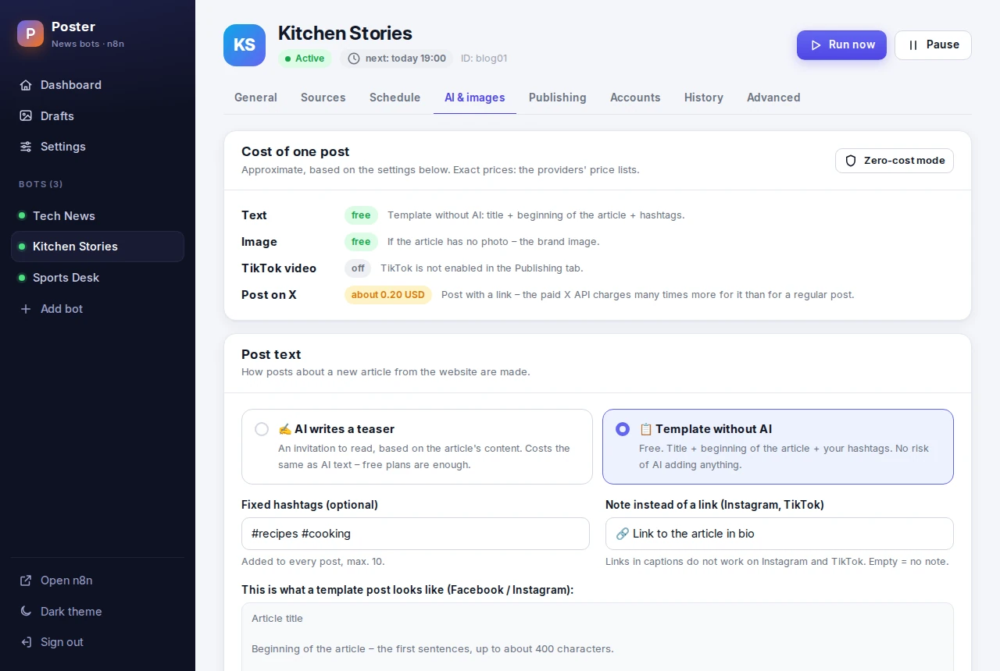

Social media on autopilot – on your own server
Poster runs 24/7 on your NAS or server and keeps your profiles busy: it follows the news on your topic (RSS feeds, Google News, X), lets AI pick the best story and draft the posts – and publishes them to X and Facebook after your ✅ in Telegram.
LITE is free under the AGPL-3.0 license. Docker on a NAS or a Linux server is all you need.

How it works
You set the topic and the sources once. Poster does the rest on its schedule.
Fresh news
RSS feeds of news sites, Google News and X profiles. Duplicates and old stories are filtered out.
Picked and written
Gemini or a model on your own hardware (Ollama) picks the most important story and writes the posts.
You approve
The draft with the article photo lands in Telegram. One tap on ✅ publishes it, ❌ rejects it.
Posted
X and Facebook get the post and you get a report. A failed platform is retried with one tap on 🔁.
A schedule that looks human
Every few hours or at the hours you pick – on the days you choose.
- Preview of the next runs before you save
- Random offset of up to 45 minutes, so posts do not go out to the minute
- Pause, resume and “Run now” in one click

Costs under control
The “Cost of one post” card shows what costs money with the current settings.
- The photo from the article is free – no paid image generation
- AI text usually fits in a free quota (a Gemini key without billing) or runs on your own hardware
- The approximate X API cost of a post is shown before you turn publishing on

Every draft archived
Images and texts of all posts stay on your NAS – ready to copy, download or post by hand.
- Texts for X and Facebook, plus a TikTok script
- Publishing results with links to the posts
- Why AI picked the story

Your keys stay home
API keys and account tokens are stored only in the panel on your NAS. No cloud account, no tracking.
No open ports
The panel polls Telegram, so the NAS does not have to be exposed to the internet.
English and Polish
The panel, Telegram messages and the docs in both languages. The panel works on a phone too.
For those who run more than one profile
The same program with more bots, more platforms and more automation – plus a year of updates and support.
- Multiple bots – each with its own topic, accounts, schedule and Telegram chat; duplicate a bot in one click
- Instagram and TikTok – photo posts on Instagram and an 8-second vertical TikTok video made from the post image (optionally Google Veo with your own key)
- Your website or blog – every new article becomes posts on all platforms, with an AI teaser or a free template
- Brand image or an illustration from your own AI account when the article has no photo (or for every post, if you choose)
- Autopilot – publishing without approval
- More AI providers – Groq, OpenRouter, Mistral and a fallback provider; monthly AI limits and usage counters



| Feature | LITE | PRO |
|---|---|---|
| Bots | 1 | unlimited |
| Sources: RSS, Google News, X profiles | ✓ | ✓ |
| Schedule, pause, “Run now” | ✓ | ✓ |
| Draft approval in Telegram | ✓ | ✓ |
| Publishing without approval (autopilot) | – | ✓ |
| X and Facebook | ✓ | ✓ |
| by hand | ✓ | |
| TikTok video from the post image (Google Veo optional) | script only | ✓ |
| Website / blog mode | – | ✓ |
| AI text: Gemini, Ollama, any OpenAI-compatible API | ✓ | ✓ |
| Groq, OpenRouter, Mistral and a fallback provider | – | ✓ |
| Photo from the article, post with a link | ✓ | ✓ |
| Brand image, illustrations from your own AI account | – | ✓ |
| Monthly AI limits and counters | – | ✓ |
| Drafts, history, alerts, cost per post, EN/PL panel | ✓ | ✓ |
| Updates and support | community | 12 months |
Pricing
One payment, no subscription. Your installation keeps working after the update period.
LITE
Open source under AGPL-3.0.
- 1 bot, X and Facebook
- Approval in Telegram
- Updates from GitHub
PRO launch price
Launch price for the first 20 licences.
- All PRO features
- 12 months of updates and support
- Renewal: $49 per year – optional
Installation service
Poster PRO installed and set up for you.
- Installation on your NAS or server
- X, Meta and TikTok developer apps
- Your first bot, ready to publish
Payments are handled by Polar (merchant of record).
FAQ
What do I need to run Poster?
A NAS or a Linux server with Docker and Docker Compose v2, about 1 GB of free RAM and a Telegram bot. The guide uses a UGREEN NAS with UGOS as the example, but any Docker host works.
How much does running it cost?
Poster LITE is free. AI text usually fits in a free quota (a Gemini key from a project without billing) or runs on your own hardware with Ollama. Publishing through the X API is billed by X: in 2026 about USD 0.015 for a post with a photo and about USD 0.20 for a post with a link.
Do I have to expose my NAS to the internet?
No. The panel polls Telegram for button clicks and talks to the social media APIs with outgoing connections only. For remote access a VPN such as Tailscale is the simplest option.
What happens when the 12 months of PRO updates end?
Your installation keeps working with no time limit. Only updates stop until you renew the licence.
Can I move from LITE to PRO later?
Yes. After the purchase run sudo bash scripts/upgrade-to-pro.sh in the project directory and enter the license
key from the email. PRO uses the same data directory, so your bot, keys and history stay where they are.
Is reading X profiles allowed?
X profiles are optional. Reading them through RSSHub uses a separate X account and may be against the X terms – RSS feeds of news sites are the safe default.